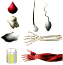
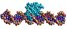
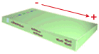
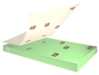
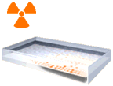
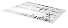

DNA Forensics Problem Set 1
Problem 1: Southern hybridization technique
DNA fingerprint analysis is based on the "Southern" hybridization technique. In this method:
Tutorial
|
DNA fingerprinting, also termed DNA profile analysis is based on the use of the "Southern" hybridization technique to analyze polymorphic regions of human DNA. Polymorphisms are explained in more detail in problem 5. The experimental steps used in a forensics laboratory for DNA profile analysis are as follows: |
|  |
1. DNA extraction
DNA can be extracted from almost any human tissue. Sources of DNA found at a crime scene might include blood, semen, tissue from a deceased victim, cells in a hair follicle, and even saliva. DNA extracted from items of evidence is compared to DNA extracted from reference samples from known individuals, normally from blood. |
|  |
2. Digestion of DNA with a restriction endonuclease
Extracted DNA is treated with a restriction endonuclease, which is an enzyme that will cut double stranded DNA whenever a specific DNA sequence occurs. The enzyme most commonly used for forensic DNA analysis is HaeIII, which cuts DNA at the sequence 5'-GGCC-3'. |
|  |
3. Agarose gel electrophoresis
Following DNA digestion, the resulting DNA fragments are separated by size via electrophoresis in agarose gels. During electrophoresis, DNAs which are negatively charged migrate toward the positive electrode. As DNA fragments move, their migration rate is slowed by the matrix of the agarose gel. Smaller DNA fragments move more rapidly through the pores of the gel matrix than larger DNA fragments. The result is a continuous separation of the DNA fragments according to size, with the smallest DNA fragments moving the greatest distance away from the origin. |
|  |
4. Preparation of a "Southern blot"
Following electrophoresis, the separated DNAs are denatured while still in the agarose gel by soaking the gel in a basic solution. Following neutralization of the basic solution, the single strand DNA molecules are transferred to the surface of a nylon membrane by blotting. This denaturation/blotting procedure is known as a "Southern blot" after the inventor, Edwin Southern. Just as the blotting of wet ink on a dry paper transfers a replica of the image to the paper, the blotting of DNA to a nylon membrane preserves the spatial arrangement of the DNA fragments that existed after electrophoresis. |
|  |
5. Hybridization with radioactive probe
A single locus probe is a DNA or RNA sequence that is able to hybridize (i.e. form a DNA-DNA or DNA-RNA duplex) with DNA from a specific restriction fragment on the Southern blot. Duplex formation depends on complementary base pairing between the DNA on the Southern blot and the probe sequence. Single locus probes are usually tagged with a radioactive label for easy detection, and are chosen to detect one polymorphic genetic locus on a single human chromosome. The Southern blot from step 4 is incubated in a solution containing a radioactive, single locus probe under conditions of temperature and salt concentration that favor hybridization. After hybridization, the unbound probe is washed away, so that the only radioactivity remaining bound to the nylon membrane is associated with the DNA of the targeted locus. |
|  |
6. Detection of RFLPs via autoradiography
The locations of radioactive probe hybridization on the Southern blot are detected by autoradiography. In this technique, the washed nylon membrane is placed next to a sheet of X-ray film in a light tight container. The X-ray film records the locations of radioactive decay. After exposure and development of the X-ray film, the resulting record of the Southern hybridization is termed an "autoradiograph," or "autorad" for short. |
|  |
7. Re-probe southern blot with additional probes
In a typical forensics DNA analysis, DNA polymorphisms on several different chromosomes are characterized. After an autorad has been developed for the first single locus probe, the radioactivity on the Southern blot can be washed away with a high temperature solution, leaving the DNA in place. The Southern blot can be hybridized with a second radioactive single locus probe, and by repetition of steps 5-7, a series of different single locus probes. The set of autorads from a Southern blot is known as a "DNA profile." |


The Biology Project
University of Arizona
Tuesday, August 20, 1996
Contact the Development Team
http://www.biology.arizona.edu
All contents copyright © 1996. All rights reserved.